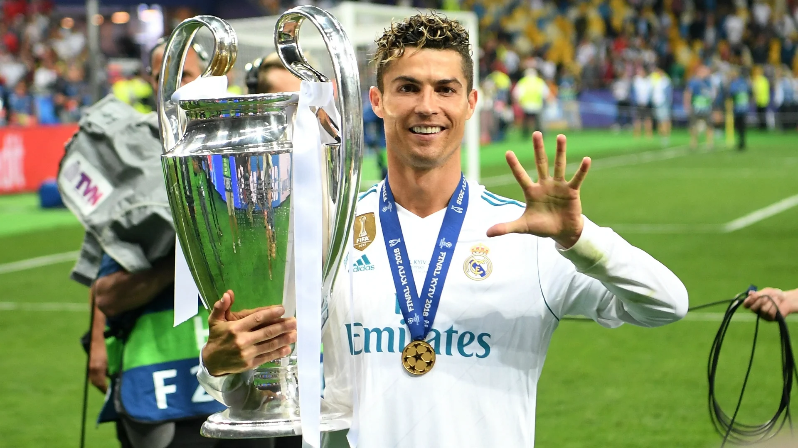

Press
here
to go to back to the previous page.
Press
here
to go to the next page
Ronaldo's Trophies and Achievements
Trophies

Here is a list of all Ronaldo's achievements:
Has won five Ballon d'Or/FIFA Ballon d'Or honors in his career
Holds the records for the most goals and assists in the UEFA Champions League
Most goals in the UEFA European Championship (14), its qualification stage (31)
The FIFA Club World Cup (7)
The most goals in a UEFA Champions League season (17)
The most goals at the international level (117)
The most appearances for a European national team (48). (191)
For club and country, he has scored a record 817 goals in his senior career.